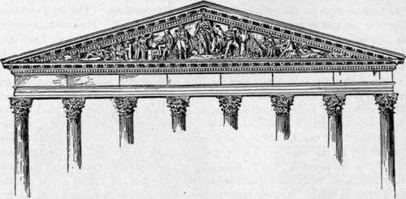

The Decorated Pediments
Description
This section is from the book "The National Capitol. Its Architecture Art And History", by George C. Hazelton, Jr. Also available from Amazon: The National Capitol Its Architecture Art and History.
The Decorated Pediments
The decoration of the pediment above the central steps on the eastern facade bespeaks attention. The semi-colossal figure in the center represents the 11 Genius of America." This work is carved in alio-rilievo from Virginia sandstone, and is chiefly interesting fiom the fact that John Quincy Adams, when President, furnished the design. It was finished just before the meeting of Congress in 1828. In his diary, Adams makes the following entry for June 30th of that year: " Overtaken by a storm near the Capitol, and took shelter under one of the arches. Found Mr. Persico, the Italian Sculptor, there, and went up to view his work at the pediment, of which I furnished him the design. He is now upon the last figure, Hope ; and thus far his execution is very satisfactory. His eagle had been indifferent in the drawing; better, but not good, in the model. In the work itself it is the pouncing bird. He called my attention to the anchor : he had, therefore, gone to Commodore Pingey and taken for his model a true anchor of a ship of war. 'And so now,' said he, 'whenever a sailor looks at this pediment he will say, " How exact the anchor is ! " ' He said he would paint the scales in the hand of Justice white; they must be painted to prevent them taking the rain, making verdigris, and dropping it upon the stone figures".
An extract from a letter written June 22, 1825, by Bulfinch, then the architect of the Capitol, will be interesting to the student:
" Our work at the Capitol proceeds but slowly, owing to delay of contractors in delivering the large blocks for columns. We.have received only 4 this season, which are raised into their places, and must have 7 more before the much talked of Pediment can be commenced. With respect to the ornament proposed to decorate this, the artists in general feel very much disappointed ; about 30 persons presented 36 designs, some well and others badly executed, but none answering the President's idea of a suitable decoration for a legislative building. He disclaimed all wish to exhibit triumphal cars and emblems of victory, and all allusions to heathen mythology, and thought that the duties of trie Nation or of Legislators should be impressed in an obvious and intelligible manner. After several attempts, the following has been agreed upon : a figure of America occupies the centre, her right arm resting on the shield, supported by an alter x>r- pedestal bearing the inscription July 4, 1776, her left hand pointing to the figure of Justice, who, with unveiled face, is viewing the scales, and the right hand presenting an open scroll inscribed Constitution, March 4, 1789; on the left of the principal figure is the eagle, and a figure of Hope resting on her anchor, with face and right hand up-lifted,—the whole intended to convey that while we cultivate Justice we may hope for success. The figures are bold, of 9 feet in height, and gracefully drawn by Mr. Persico, an Italian artist. It is intended that an appropriate inscription shall explain the meaning and moral to dull comprehensions".
The cost of this work to the government, though the design of the President should have been, and undoubtedly was, gratuitous, was $15,000. Soon after its completion, a part of the arm of the figure of Justice, together with the Constitution, fell from the action of frost to the steps of the portico, and was shattered into fragments.
An effective piece of work, designed by Crawford, representing the progress of American civilization and the decadence of the Indian race, adorns the pediment of the eastern portico of the Senate wing. In the center stands America. On her right are the soldier, merchant, youths, schoolmaster, pupil and mechanic, with the anchor and wheat sheaf as emblems of stability and prosperity. On her left, the march of Western civilization is further typified by the pioneer—whom curiously enough the sculptor has represented as chopping left-handed; and by the hunter, the Indian brave, the Indian mother and child, and, as the last sad chapter in the story, the Indian grave.
The pediment was completed in 1862. The statues, which were executed in the shops of the extensions, of marble from Lee, Massachusetts, are fastened with heavy copper clamps. The figure of America for several years stood upon a pedestal in the park; the companion pieces upon a platform in Statuary Hall. Crawford received for the models, and for those of Justice and History above the bronze doors of the Senate wing, $20,000. Thomas Gagliardi received $5,500 for chiseling the wheat sheaf, anchor, group of instruction and youths. He was assisted by Casoni in cutting the figure of America and the Indian family, for which they jointly received $7,000. Another Italian, G. Casprero, was paid $400 for executing the Indian grave. The figures of the soldier, merchant, woodman, Indian chief and hunter all were cut by G. Butti, for which he was paid $12,350. D. Giampaoli chiseled for $1,900 the figure of the mechanic.
It was intended to place in the corresponding tympanum above the east portico of the House of Representatives a similar group, indicative of American life and history, but this has never been carried out.
Continue to: